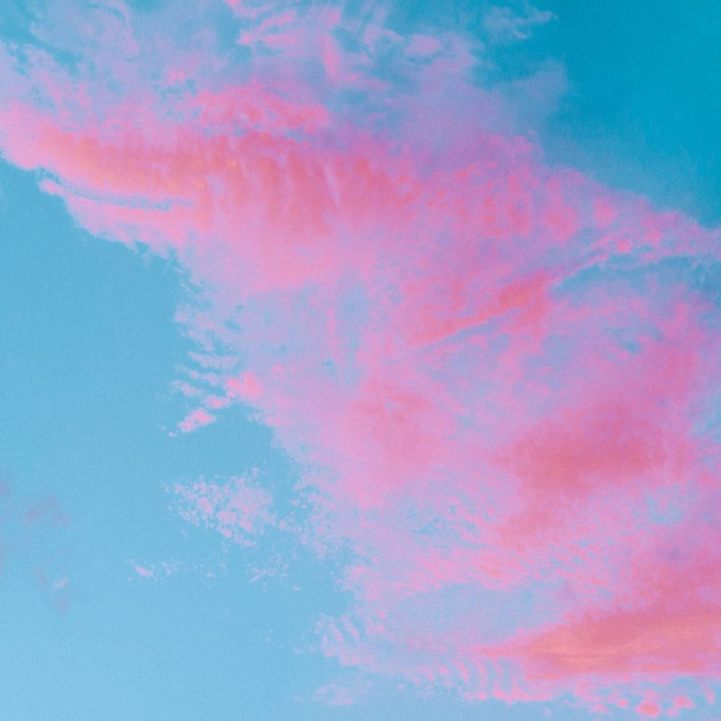

03.07.2026 · Single · UDZ Records
SpotifyApple MusicDeezer
23.05.2024 · Single · UDZ Records

01.09.2023 · Single · UDZ Records
07.07.2023 · Single · UDZ Records
▶ Watch the live sessionSpotifyApple MusicDeezer
02.06.2023 · Single · UDZ Records
24.04.2020 · Single · with Jimmi Herbert
08.11.2019 · Single
19.07.2019 · EP